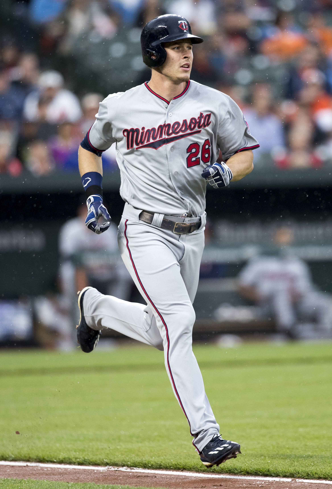

Zone Coverage is a Minnesota-based sports media company. I began writing for Zone Coverage in April, 2023.
The following is a list of my favorite articles that have been published on ZoneCoverage.com
My favorite Zone Coverage articles
- Are the Twins Running Out Their Optimal Lineup?
-
This is mostly data-driven piece based on the work of Tom Tango. Though I incorrectly called it Mixed
Integer Programming and I would love to remake this piece, it was fun to have a finished product (the lineup)
to show readers.
- What's Gotten Into Max Kepler?
-
Though I consider this one of my five favorite articles, I think it might be one of the worst written.
Max Kepler has been my favorite player since 2015. I loved digging into his career and writing an entirely
positive piece about him.

- Joe Ryan Must Continue to Flesh Out His Arsenal
-
I love researching pitching. This article isn't my favorite, but it was one that was met with
some kind words from Twitter. I look forward to seeing what Joe Ryan does in 2024, hopefully with some
new pitches in his arsenal.
- What Does It Mean When We Say Ant Must Mature as a Scorer?
-
I try to use Zone Coverage as a space to practice data-driven journalism. This article is about player
scoring volatility in the NBA and how Anthony Edwards could become a more consistent scorer with more
trips to the free throw line.
- Anthony DeSclafani Should Take a Page Out of Zac Gallen's Book
-
As I mentioned above, I've spent hours learning about pitching. Watching videos,
reading research articles or coaching sheets, and of course throwing on my own, this is just the
latest article where I've felt I can look back at what I've learned. I don't think DeSclafani can
perfectly emulate Gallen because of his release point, but it was fun to dig into how DeSclafani could change.